When you decide to apply to graduate programs for a Master's in Applied Math and you completed your protracted,
five-year undergrad two years ago, you must quickly come to terms with the fact that most of the theorems and proofs
you spent so many hours laboring over and (mis)understanding have entirely vanished from your consciousness. Some
might respond to this realization with an alarmed determination, and throw themselves heartily into such instructive
and thorough resources as Paul's Online Math notes, or perhaps [Committed Student A]'s Classroom Notes. However,
as a student who prided himself on his sketchy-at-best note-taking habit, I simply do not have this resource to fall
back on. But, no fear! I have an inventive shortcut. Why review entire courses when a lovely organization known fondly
as ETS has provided a list of example problems from all the subjects they consider to be necessary for an aspiring
graduate student to understand? Surely, a thorough explanation of each problem from the GRE practice booklet will
be just as instructive. (I pray). So this is that. And that is that. And here we go.
This question feels like it could be solved with ease if one knew (or could recall) more facts about inscribed circles and equilateral triangles. Still, it's readily solvable without helpful facts, so let's do it that way. We'll begin by creating a right triangle with angles 30˚, 60˚ and 90˚ and sides 2, x and y. It happens that 6 of these such triangles will form our original equilateral triangle. (This isn't just random good fortune, obviously. Also, I understand a diagram would be helpful, but it's too much work to figure out how to do that in KaTeX (not a typo; it's the package I'm using to render LaTeX in the browser), so you can draw one if you want.) As such, we simply need to find the area of this triangle, multiply it by 6, and we have our answer. We recall from high school (and Google) that 30-60-90 triangles have sides 1, 2 and \sqrt{3}. In our case, this leaves us with sides 2, 4 and 2\sqrt{3}. The area of this triangle is then:
Recall that certain integrals can be solved using substitution. Specifically, the substitution technique works when the integral to be evaluated takes the form \int f(g(x)) \, g'(x) \, dx, and is summarized as follows:
We're at a real risk of exposing how very little I actually know about linear algebra here. However (and fortunately), this problem is actually rather simple with the appropriate tools. We need the following two facts about vector spaces and subspaces:
Ah, combinatorics. This should be okay. Let's find the probability that one integer will be the square of the other; then we can simply subtract that result from 1. First, how many possible choices are there? Both Sofia and Tess have 10 integers to select from, so that leaves us with a total of 10 \times 10 = 100 combinations. The only numbers that are perfect squares are 1, 4 and 9. These can be selected in 5 unqiue ways:
The trick here is to find a common exponent for these three numbers. 2^\frac{1}{2} can be re-written as 2^\frac{3}{6} = 8^\frac{1}{6}. Similarly, 3^\frac{1}{3} = 3^\frac{2}{6} = 9^\frac{1}{6}. Now, we can clearly see the order to be \boxed{6^\frac{1}{6} \leq 2^\frac{1}{2} \leq 3^\frac{1}{3}}.
This shouldn't be too tricky. (To editorialize, the truly tricky part of this problem was rendering a passable depiction of the graph from the GRE practice booklet. Fortunately, it was relatively easy to identify the graph as a piecewise function consisting of an ellipse and a circle. You'll be satisfied to hear that the above reproduction is precisely identical to the original.) Let's consider the general behavior of f. From f', we can see that f begins sloping upwards, gradually flattens out, briefly slopes down, and then flattens out again. At f(0), this slope is positive, at f(2) it is zero, and at f(4) it is also zero.
Problem 1
\lim_{x \to 0} \frac{\cos(3x) - 1}{x^2}
Right off the bat, we can feel discouraged that this isn't as simple as just setting x = 0
and simplifying the expression. We're going to have to do some clever substitions to get that x
out of the denominator. AHA! A cursory Google reveals some useful limits that may help us out.
\lim_{x \to 0} \frac{\sin(\theta)}{\theta} = 1 \quad\mathrm{and}\quad \lim_{x \to 0} \frac{\cos(\theta) - 1}{\theta} = 0
What if we do a little algebra to get our original limit to look a little bit more like one of these?
\lim_{x \to 0} \frac{\cos(3x) - 1}{3x} \times \frac{3}{x}
NOPE! SHIT. This isn't right. We forgot that this limit is indeterminate. And when limits are
indeterminate, we gotta apply L'Hospital's Rule. Google quickly summarizes L'Hospital's Rule as follows:
\text{If}\quad \lim_{x \to a} \frac{f(x)}{g(x)} = \frac{0}{0} \quad\text{then}\quad \lim_{x \to a} \frac{f(x)}{g(x)} = \lim_{x \to a} \frac{f'(x)}{g'(x)}
So now we must go about differentiating \cos(3x) - 1 and x^2.
Recalling that the derivative of \cos(x) is -\sin(x) and
remembering to implement the product rule, this leaves us with
\lim_{x \to 0} \frac{-3\sin(3x)}{2x}.
Let's now try to get this looking a bit more like expression (2). With some clever algebra, we are left with:
\lim_{x \to 0} \frac{\sin(3x)}{3x} \times \frac{-9}{2}.
The first fraction simplifies to 1, and so we are left with the answer \boxed{\frac{-9}{2}.}
Problem 2
What is the area of an equilateral triangle whose inscribed circle has radius 2?
This question feels like it could be solved with ease if one knew (or could recall) more facts about inscribed circles and equilateral triangles. Still, it's readily solvable without helpful facts, so let's do it that way. We'll begin by creating a right triangle with angles 30˚, 60˚ and 90˚ and sides 2, x and y. It happens that 6 of these such triangles will form our original equilateral triangle. (This isn't just random good fortune, obviously. Also, I understand a diagram would be helpful, but it's too much work to figure out how to do that in KaTeX (not a typo; it's the package I'm using to render LaTeX in the browser), so you can draw one if you want.) As such, we simply need to find the area of this triangle, multiply it by 6, and we have our answer. We recall from high school (and Google) that 30-60-90 triangles have sides 1, 2 and \sqrt{3}. In our case, this leaves us with sides 2, 4 and 2\sqrt{3}. The area of this triangle is then:
\frac{1}{2} \times 2\sqrt{3} \times {2} = 2\sqrt{3}.
Multiplying this result by 6 gives us the area of the original equilateral triangle:
\boxed{12\sqrt{3}}.
Problem 3
\int_{e^{-3}}^{e^{-2}} \frac{1}{x \log x} \, dx
Oof. This one is a real doozy. Let's try to break it down into quasi-digestible pieces. We'll begin by finding the
definite integral. Once that's done, we can worry about evaluating the result. (Whether or not this is a prudent
or practical choice is very much an open question, but let's hope that at worst it is instructive.) Okay.
Recall that certain integrals can be solved using substitution. Specifically, the substitution technique works when the integral to be evaluated takes the form \int f(g(x)) \, g'(x) \, dx, and is summarized as follows:
\int f(g(x))\, g'(x) \, dx = \int f(u) \, du \quad\text{where}\quad u = g(x).
In our case, g(x) = \log(x) and g'(x) = \frac{1}{x}. (This
second fact may seem surprising if you've largely forgotten all of integral calculus, as I have. Don't stress it.
StackOverflow tells me it's true.) Proceeding with the substitution, we have u = \log(x)
and du = \frac{1}{x} \, dx. Then:
\int \frac{1}{x \log x} \, dx = \int \frac{1}{u} \, du \quad\text{where}\quad u = \log(x).
Integrating the right-hand side and substituting back in for u, we are left with the expression:
\log(\log(x)).
Now, we must evaluate this result at e^{-2} and e^{-3}. Doing so,
we have:
\log(\log(e^{-2})) - \log(\log(e^{-3})).
Recalling (through the aid of Google) the properties of logarithms, we can make a series of simplifications:
\begin{aligned}
\log(-2)) - \log(-3)) \\
\log\left(\frac{-2}{-3}\right) \\
\log\left(\frac{2}{3}\right)
\end{aligned}
This gives us the final result: \boxed{\log\left(\frac{2}{3}\right)}.
Problem 4
Let V and W be 4-dimensional subspaces of a 7-dimensional vector
space X. Which of the following CANNOT be the dimension of the subspace
V \cap W?
We're at a real risk of exposing how very little I actually know about linear algebra here. However (and fortunately), this problem is actually rather simple with the appropriate tools. We need the following two facts about vector spaces and subspaces:
\dim(V + W) = \dim(V) + \dim(W) - \dim(V \cap W)
and
\dim(V + W) \leq \dim(X).
We know that \dim(X) = 7, so \dim(V + W) \leq 7. Substituting this
result into equation (14), we have:
7 \geq \dim(V) + \dim(W) - \dim(V \cap W).
Finally, plugging in values and solving for V \cap W:
\begin{aligned}
7 &\geq 4 + 4 - \dim(V \cap W) \\
-1 &\geq - \dim(V \cap W) \\
1 &\leq \dim(V \cap W).
\end{aligned}
We are left with the fact that the subspace V \cap W must be greater than 0.
Problem 5
Sofia and Tess will each randomly choose one of the 10 integers from 1 to 10. What is the probability that neither
integer chosen will be the square of the other?
Ah, combinatorics. This should be okay. Let's find the probability that one integer will be the square of the other; then we can simply subtract that result from 1. First, how many possible choices are there? Both Sofia and Tess have 10 integers to select from, so that leaves us with a total of 10 \times 10 = 100 combinations. The only numbers that are perfect squares are 1, 4 and 9. These can be selected in 5 unqiue ways:
(1, 1), \,\, (2, 4), \,\, (4, 2), \,\, (3, 9), \quad\text{and}\quad (9, 3).
Therefore, there is a \frac{5}{100} probability that one integer will be the square
of the other. This means that there is a 1 - 0.05 = 0.95 probability that neither
integer is the square of the other.
Problem 6
Which of the following shows the numbers 2^\frac{1}{2},
3^\frac{1}{3}, and 6^\frac{1}{6}in increasing order?
The trick here is to find a common exponent for these three numbers. 2^\frac{1}{2} can be re-written as 2^\frac{3}{6} = 8^\frac{1}{6}. Similarly, 3^\frac{1}{3} = 3^\frac{2}{6} = 9^\frac{1}{6}. Now, we can clearly see the order to be \boxed{6^\frac{1}{6} \leq 2^\frac{1}{2} \leq 3^\frac{1}{3}}.
Problem 7

The figure above shows the graph of the derivative f' of a function
f, where f is continuous on the interval
[0, 4] and differentiable on the interval (0, 4). What is the
proper ordering of the values f(0), f(2) and
f(4)?
This shouldn't be too tricky. (To editorialize, the truly tricky part of this problem was rendering a passable depiction of the graph from the GRE practice booklet. Fortunately, it was relatively easy to identify the graph as a piecewise function consisting of an ellipse and a circle. You'll be satisfied to hear that the above reproduction is precisely identical to the original.) Let's consider the general behavior of f. From f', we can see that f begins sloping upwards, gradually flattens out, briefly slopes down, and then flattens out again. At f(0), this slope is positive, at f(2) it is zero, and at f(4) it is also zero.